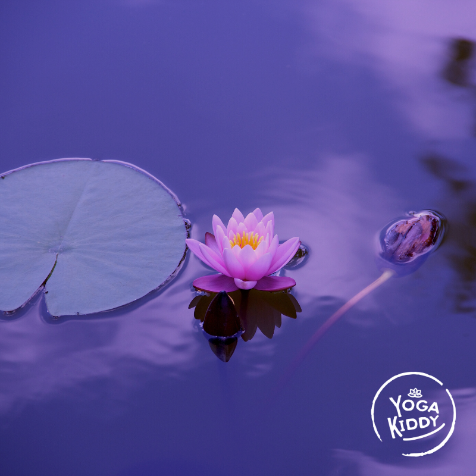

Según el latín, relajación es la acción y efecto de relajar o relajarse (aflojar, ablandar), por tanto la relajación está asociada a reducir la tensión física y mental.
Es preciso aclarar la diferencia entre Relajación y Meditación, buscando esta última trascender el “yo y los demás”, roles y circunstancias externas para llegar al Ser sin cuerpo y mente. La Relajación, más humilde en sus objetivos busca la calma mental y física mediante técnicas que podrían ser similares a las de Meditación.
Hoy en día vivimos en una constante vorágine donde todos nos vemos afectados de una u otra manera, y es por esto la necesidad de encontrar estados de bienestar, ya que así podemos conseguir un alto grado de sensibilidad y receptividad natural, permitiendo que nuestro ser encuentre su equilibrio.
Relajarnos es ir a ese lugar tan preciado, ese espacio maravilloso que habita dentro de cada uno de nosotros/as, territorio donde abunda la calma, la paz y el amor. Reconocer el valor del silencio interno, de escucharnos, de mirarnos, de volver al origen, es una labor que necesitamos hoy en día.
El regalar momentos a otros y a nosotros mismos, les permite comprender la empatía y el valor del cuidado de quienes los rodean. El disfrute del relajo colectivo, crea atmósferas de respeto, concentración y mucho amor.
A continuación encontrarás algunas propuestas de cómo puedes hacerlo, ya sea en tus clases de yoga, o si eres Padre/Madre junto a tus hijos/as.
¿Cómo?
- Creando una atmósfera de relajación, eligiendo un espacio físico libre de muchos estímulos donde puedan disfrutar de ese momento.
- Elegir aromas que nos permitan entrar en ese estado que buscamos, tales como: Lavanda, Mandarina, Rosa, Nerolí.
- Recostarse sobre una superficie cómoda y escuchar el sonido de los pájaros, la lluvia, el viento, etc. Esto puede ser directamente de nuestra naturaleza o apoyarte de audios. Así mismo, puede ser el sonido que producen instrumentos como el palo de agua, las tinshas, la kalimba, la flauta, etc.
- Regalar caricias por medio de alguna tela suave y aromatizada para recorrer sus cuerpos de manera delicada y amable.
- Propiciar la instancia de la escucha del silencio, llevando la atención de los niños y niñas a sus cuerpos.
- Confeccionar almohadillas rellenas de semillas, flores, (que tengan por objetivo relajar) para colocar sobre sus ojos, permitiendo que sus músculos oculares descansen.
- Utilizando aceite para masajes de almendras frotar sus manos y pies, mientras los acompaña alguna música que los relaje. Con esta acción liberamos todas las tensiones acumuladas en estas extremidades.
- Pedirles que elijan su juguete favorito y mientras se encuentran en shavasana (Posición de descanso), situarlo sobre el abdomen del niño o niña. El objetivo es conscientizar sobre la respiración diafragmática, entregando la consigna que deben hacer que este objeto suba y baje por medio de su respiración.